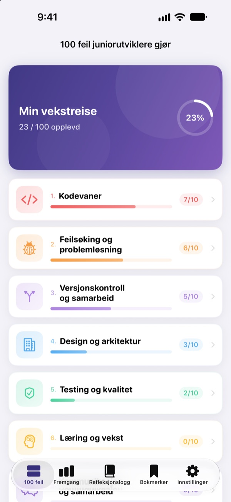
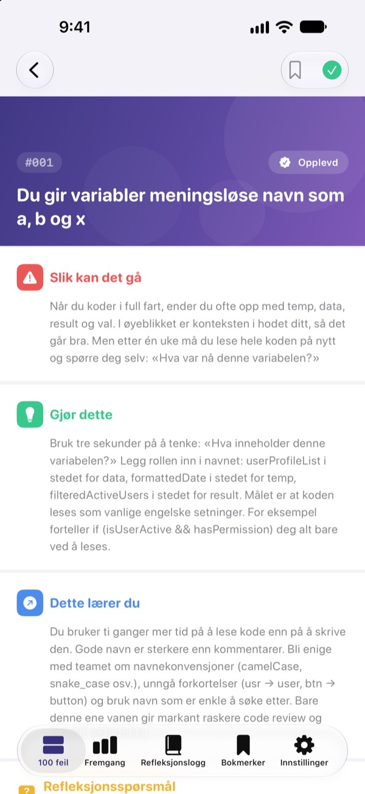
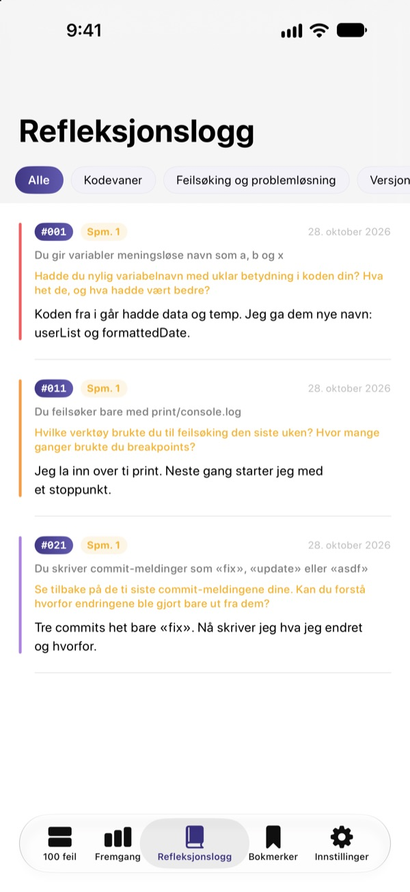
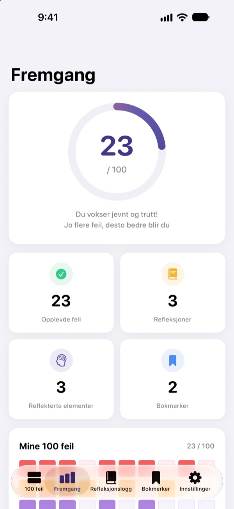

Kjenn feilene
før de svir
De 100 feilene nye utviklere oftest gjør, samlet på ett sted. For hver feil leser du hva som skjer, hva du bør gjøre og hva du lærer, og så svarer du på et refleksjonsspørsmål så du ikke gjør samme feil to ganger.
De første 30 feilene er gratis. For iPhone, iPad og Mac.

Åpne en feil
Her er de 10 feilene i den første gratiskategorien, ord for ord som i appen. Marker dem du allerede har opplevd, som Opplevd.
Samme kommentar i kodegjennomgangen igjen?
Uforståelige variabelnavn, funksjoner på 200 linjer, kopiert kode. Alle seniorer har vært der, men som regel oppdager man det først når man går i fella selv. 100 feil viser deg feilene på forhånd og får deg til å reflektere over ditt eget arbeid, så du slutter å gjenta dem.
Hva skjer, hva gjør du, hva lærer du
Hver feil er delt i tre: hva som skjer, hva du bør gjøre, og hva du lærer av den.
Ti kategorier fra kodevaner til sikkerhet og ytelse, bare med feil som går igjen i ekte team.

Refleksjonsspørsmål, så det sitter
Hver feil har 4 refleksjonsspørsmål, 400 til sammen. Svar med dine egne prosjekter i tankene, så blir det du leser til erfaring.
Svarene dine samles i refleksjonsloggen etter kategori, klare til å leses igjen.

Se hvor langt du har kommet
Kryss av feilene du har opplevd, så vokser fremgangen per kategori og totalt. Lagre et bokmerke på det du vil tilbake til.
Alt synkroniseres via iCloud mellom iPhone, iPad og Mac.

Tre steg, så er du i gang
- 1
Velg en kategori
Kodevaner, feilsøking og versjonskontroll er åpne gratis.
- 2
Les og kryss av
Trykk på Opplevd på feilene du selv har gjort.
- 3
Reflekter
Skriv et svar, gjerne kort. Det havner i refleksjonsloggen din.
De 10 kategoriene
- Kodevaner
- #001–#010 · Gratis
- Feilsøking og problemløsning
- #011–#020 · Gratis
- Versjonskontroll og samarbeid
- #021–#030 · Gratis
- Design og arkitektur
- #031–#040 · PRO
- Testing og kvalitet
- #041–#050 · PRO
- Læring og vekst
- #051–#060 · PRO
- Kommunikasjon og samarbeid
- #061–#070 · PRO
- Utrulling og drift
- #071–#080 · PRO
- Sikkerhet og data
- #081–#090 · PRO
- Ytelse og optimalisering
- #091–#100 · PRO
Hver kategori har 10 feil, og hver feil har 4 refleksjonsspørsmål.
30 gratis. Alle 100 med PRO.
Gratis
- De første 3 kategoriene, 30 feil
- De 120 refleksjonsspørsmålene til dem
- Sjekkliste, refleksjonslogg, fremgang og bokmerker
- iCloud-synkronisering (iPhone, iPad, Mac)
100 feil PRO
- De andre 7 kategoriene, 70 feil til (#031–#100)
- 280 refleksjonsspørsmål til
- Alle fremtidige innholdsoppdateringer
Månedlig, årlig (opptil 50 % billigere enn månedlig) eller et engangskjøp for alltid.
Ingen innsamling av personopplysninger, ingen analyseverktøy og ingen reklame.
Vanlige spørsmål
Hva er gratis?
Alle 30 feilene med spørsmål i kategoriene Kodevaner, Feilsøking og problemløsning samt Versjonskontroll og samarbeid. Sjekklisten, refleksjonsloggen, fremgang, bokmerker og iCloud-synkronisering er også gratis.
Hvordan bruker jeg PRO på en annen enhet?
Logg inn med samme Apple-ID og trykk på Gjenopprett kjøp på abonnementsskjermen.
Hvordan sier jeg opp abonnementet?
Når som helst under Innstillinger › Apple-ID › Abonnementer. Abonnementet fornyes automatisk med mindre du sier det opp minst 24 timer før gjeldende periode er over. Kjøp for alltid betales bare én gang.
Dataene synkroniseres ikke mellom enhetene.
Sjekk at alle enhetene er logget på iCloud med samme Apple-ID, og at iCloud er slått på for appen i Innstillinger. Synkronisering krever også nettverkstilkobling.
Hvordan sletter jeg alt?
Trykk på Tilbakestill alle data i appens innstillinger. Avkryssinger, svar og bokmerker slettes, og det kan ikke angres.
Hvilke enheter fungerer den på?
iPhone, iPad og Mac. PRO låses opp på alle enheter med samme Apple-ID.
Blir dataene mine sendt noe sted?
Nei. Avkryssingene og svarene dine lagres bare på enhetene dine og i din egen iCloud. Appen samler ikke inn personopplysninger og har verken analyseverktøy eller reklame.
Spørsmål eller forslag? Skriv til leeo@kakao.com.